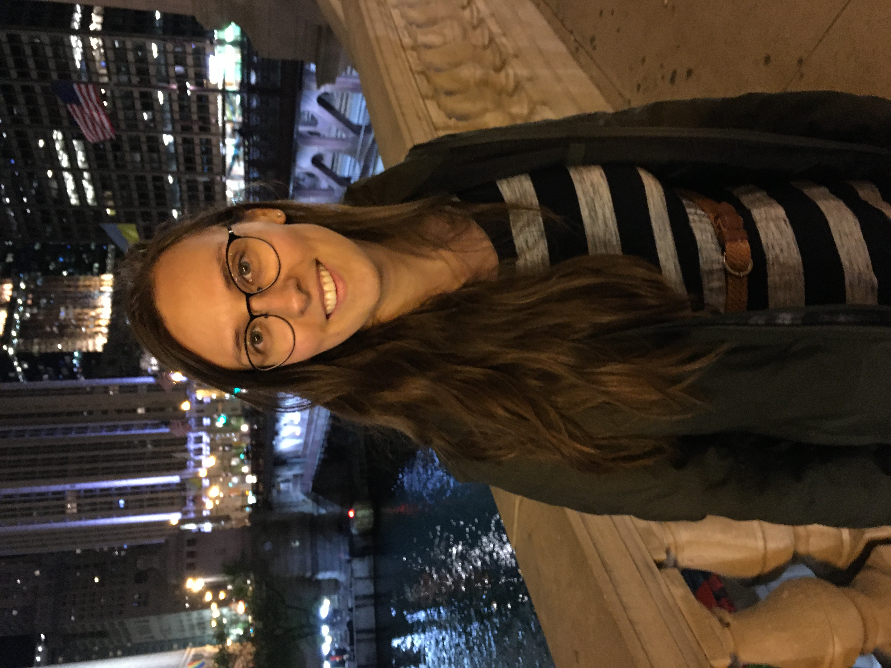

Megan Roda
Member
School of Mathematics
Institute of Advanced Study
Email: mroda [at] ias [dot] edu
I am a member (postdoc) of the School of Mathematics in the Institute of Advanced Study. I obtained my PhD in the Department of Mathematics at the University of Chicago, where I was advised by Alex Eskin. Before joining UChicago, I received a Bachelor of Science in Mathematics from McGill University and completed the Accelerated Master's program in Mathematics also at McGill University. My Master's thesis advisor was Eyal Z. Goren.
I study dynamical systems and ergodic theory. In my thesis I studied certain large actions on compact complex surfaces, with a focus on measure rigidity and classification. I continue to be interested in this setting and in more general smooth dynamical settings. I have also more recently been exploring topics in Teichmuller and homogeneous dynamics.
From 2019 - 2022 I received funding from NSERC through the Canadian Postgraduate Scholarship PGS. I also received the Lawrence and Josephine Graves teaching prize from the University of Chicago, Department of Mathematics, in 2023.
Papers
Roda, M. (2024). Classifying ergodic hyperbolic stationary measures on compact complex surfaces with large automorphism groups. arXiv Preprint.
Roda, M. (2019). Supersingular isogeny graphs with level N structure and path problems on ordinary isogeny graphs. MSc Thesis, McGill University.
Teaching
Graduate Student Lecturer
From 2021 to 2024, I taught the following classes as the instructor of record: MATH 13100, 13200 (Calculus), 15250 (Economical Analysis), 19620 (Linear Algebra). I have taught MATH 19620 multiple times.
College Fellow
I was a teaching assistant for the following classes at UChicago in 2020: MATH 26200 (Point-set Topology), MATH 25400 (Group Theory), and MATH 20300 (Real analysis).